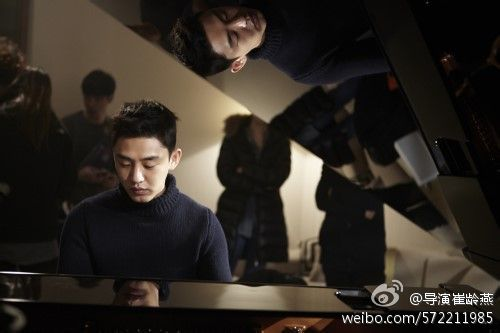

//@导演崔龄燕: 回复@Ada李力:是一部深刻的女性题材的佳作。 //@Ada李力:这两天看完了，今天已经向三个人做了推荐。这个剧获得了最佳导演奖和最佳剧本奖。20岁差异的不伦恋更像是噱头，年轻人更多是起了催化剂的作用，实际故事是讲了一个中年女对过去岁月的反思，及觉醒与重生。@导演崔燕:最新韩剧《密会》绝对值得看！从来看影视作品都没有像这部，如此地享受其男女主人公大段的钢琴演奏，太美、太震撼、太让人动心了！记住了韩国新星刘亚仁，真挚的表演，特别是把一个20岁男孩用音乐和爱情征服他43岁老师的复杂心理变化，演绎得淋漓尽致。虽没有法国经典《钢琴教师》深刻，但情在、心在。 